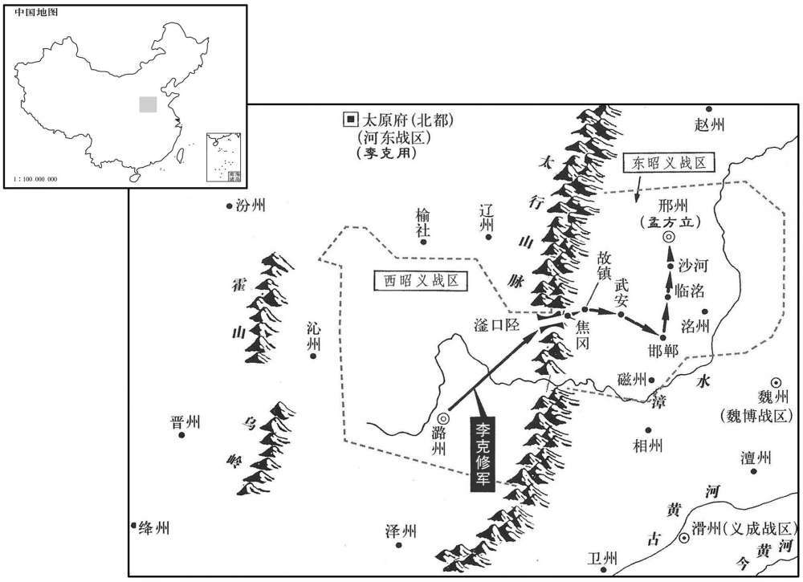
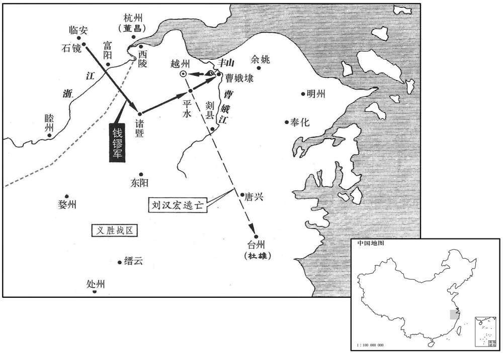

公元886年资治通鉴：本年记事、原文与白话对照
按原书编年位置阅读；追叙和史论不等于本年发生的事件。白话采用所据译本，缺译不以生成译文补齐。
卷256 · 本年记事
公元886年 · 唐僖宗惠圣恭定孝皇帝光启二年
二年〔（丙午，八八六）〕
上传原文的注释括号有异常，字符原样保留；无法可靠划分的段落默认全文显示。
本年事件索引（现代整理）
- 镇海牙将张郁作乱，攻陷常州
- 李克用、王重荣请求僖宗还宫并弹劾田令孜
- 田令孜夜劫僖宗出奔宝鸡，朝臣多未能随驾
- 僖宗任孔纬为御史大夫，命其返凤翔召集百官
- 田令孜弄权致僖宗再度播迁，引发天下怨愤
- 萧遘、裴澈拒绝朱玫召见，孔纬独赴行在迎驾
- 邠宁、凤翔兵追击僖宗，田令孜护驾逃出大散关
- 李克用回到晋阳
- 王重荣、朱玫、李昌符再奏请诛杀田令孜
- 郑从谠任太傅兼侍中
- 朱玫、李昌符设栅阻断险道，僖宗改道艰难抵达山南
- 凤翔百官弹劾田令孜及韦昭度
- 严遵美在西县迎接僖宗，车驾抵达兴元
- 孔纬、杜让能拜相
- 李铤等在凤州击败邠宁军
- 僖宗命王重荣供应军粮，王重荣以未诛田令孜为由拒绝
- 卢渥任山南西道留后，王建等奉命驻军修栈道
- 陈敬瑄猜忌高仁厚，出兵将其杀害
- 朱玫欲拥立襄王，萧遘拒绝参与废立
- 朱玫逼凤翔百官奉襄王李熅监国，随后率军回长安
- 田令孜自知失势，将西川监军一职交杨复恭
- 朱玫擅自任官并封拜藩镇，企图拉拢诸镇
- 吕用之另建牙府，仿效高骈并架空其权
- 萧遘称病离开朝廷，返回永乐
- 李昌符不接受朱玫封官，转而向僖宗上表
- 朱玫派王行瑜率兵追击僖宗
- 杜让能建议联络王重荣，刘崇望奉诏出使，王重荣归附
- 李克用拒绝襄王诏书并檄告邻道讨伐朱玫
- 秦贤攻宋、汴，朱全忠击败后遣将攻蔡州
- 杨守亮任金商节度使，率兵会合王重荣、李克用讨朱玫
- 李克用请诸道合兵迎驾，僖宗令其先平定三辅
- 周岳攻陷潭州，黄皓杀害闵勖后被周岳擒杀
- 周宝遣丁从实夺回常州，张郁逃至海陵
- 秦宗权攻陷许州，杀害节度使鹿晏弘
- 王行瑜攻兴州，杨晟弃镇逃往文州
- 钦化军改号武安军，周岳任节度使
- 李全忠卒，子李匡威任卢龙留后
- 王潮攻克泉州杀廖彦若，安抚百姓并迫使王绪自尽
- 朱玫遣张行实攻大唐峰，被李铤击退
- 李克修攻孟方立，擒获吕臻并攻取数县
- 凤翔百官劝进，襄王熅称帝改元建贞
- 董昌遣钱镠攻越州，钱镠从诸暨开山出兵
- 张雄、冯弘铎逐苏州刺史，占据苏州
- 诸葛爽卒，刘经、张全义拥立其子仲方留后
- 李克修攻邢州不克而还
- 钱镠攻克越州，刘汉宏逃往台州
- 张骁兵变攻滑州，朱全忠夺城并俘安师儒
- 田令孜抵达成都，请求寻医
- 诸军攻克凤州，任满存为防御使
- 王行瑜倒戈杀朱玫，襄王熅出逃被王重荣擒杀
- 杜雄诱捕刘汉宏献给董昌，刘汉宏被斩
- 王重荣献襄王首级，僖宗采纳殷盈孙建议废为庶人
- 刘经与李罕之争夺河阳，河阳军败走怀州
- 孙儒攻陷郑州、河阳，自称节度使
- 张佶与刘建锋密谋脱离秦宗权
- 魏虔率军侵庐州，被田頵等击败，杨行愍改名杨行密
- 朱瑾逐齐克让据兖州，朝廷授其泰宁节度使
- 周通攻陷鄂州，杜洪乘虚据州自称留后
- 张濬坚守荆南两年，秦宗言撤围而去

本年形势与背景参考图
春，正月，镇海牙将张郁作乱，攻陷常州。〔考异曰：皮光业见闻录曰：「郁，润州小将也。周宝差郁押兵士三百人戍于海次，因正旦酗酒，杀使府安慰军将，度不免祸，遂作乱。润州差拓跋从领兵讨之，郁自常熟县取江阴而入常州。刺史刘革到任方一月，亲执牌印于戟门而降。」新纪曰：「正月辛巳，郁陷常州。」按皮录但言郁以正旦杀安慰军将耳，非当日即陷常州。新纪误也。
本段缺少可靠对应白话，原文完整保留；未使用生成译文。
李克用还军河中，与王重荣同表请大驾还宫，因罪状田令孜，请诛之。上复以飞龙使杨复恭为枢密使。〔田令孜摈斥杨复恭，见上卷中和三年。〕
李克用撤军回到河中，与王重荣一同进呈表章请唐僖宗返回长安，并指出田令孜的罪状，请求诛杀田令孜。唐僖宗再次任命飞龙使杨复恭为枢密使。
戊子，令孜请上幸兴元，上不从。是夜，令孜引兵入宫，〔此宫，谓行宫也。〕劫上幸宝鸡，黄门卫士从者纔数百人，〔从，才用翻。〕宰相朝臣皆不知。翰林学士承旨杜让能宿直禁中，〔天子行幸所至，宿次之地，宿卫将士外设环卫，近臣宿直各有其次，与宫禁无异，故行宫内亦谓之禁中。〕闻之，步追乘舆，〔乘，绳证翻。〕出城十余里，得人所遗马，〔遗马弃而不及收者。〕无羁勒，解带系颈而乘之，独追及上于宝鸡；〔九域志：宝鸡县，在凤翔西南六十五里。〕明日，乃有太子少保孔纬等数人继至。让能，审权之子，〔杜审权见二百四十九卷宣宗大中十三年。〕纬，戣之孙也。〔孔戣见宪宗纪。〕宗正奉太庙神主至鄠，〔鄠，音户。九域志：鄠县在长安南六十里。〕遇盗，皆失之。朝士追乘舆者至盩厔，〔九域志：盩厔，在凤翔东南二百里，音舟窒。〕为乱兵所掠，衣装殆尽。
戊子（初八），田令孜请僖宗前往兴元，唐僖宗不同意。这天夜间，田令孜带领军队进入僖宗的行宫，劫持僖守前去宝鸡，跟随的宦官侍卫士兵仅几百人，宰相和朝中大臣都不知道。翰林学士承旨杜让能这天正在唐僖宗行宫值宿，听说僖宗被劫持，跑步追赶皇帝的车舆，出以凤翔城十几里，杜让能碰到一匹别人遗弃的马，没有笼头缰绳，便下腰带绑在马脖子上，骑马独自追到宝鸡见到僖宗。第二天，才有太子少保孔纬等几个人相继赶到。杜让能是杜审权的儿子；孔纬是孔的孙子。宗正官奉持太庙先帝的牌位行至县时，遇到盗贼，神主牌位都散失了。朝臣追赶僖宗到达，遭到作乱军队的抢掠，衣服几乎都丢光了。
庚寅，上以孔纬为御史大夫，使还召百官，上留宝鸡以待之。
庚寅（初十），唐僖宗任命孔纬为御史大夫，派他回凤翔召来朝中百官，僖宗留在宝鸡等待他们。
时田令孜弄权，再致播迁，〔帝始焉避黄巢而奔蜀，今又避并﹑蒲之兵而出，再致播迁，其祸皆本于田令孜弄权。〕天下共忿疾之；朱玫﹑李昌符亦耻为之用，且惮李克用﹑王重荣之强，更与之合。
当时田令孜玩弄权势，以致皇帝再次离开京城流亡迁徒，天下的人们都对田令孜愤怒痛恨。朱玫、李昌符也感到被田令孜利用的羞耻，并且惧怕李克用、王重荣兵力的强大，便改弦更张与李克用、王重荣联合起来。
萧遘因邠宁奏事判官李松年至凤翔，〔唐末藩镇遣其属奏事，皆谓之奉事官。判官，幕府右职也，朱玫遣之奏事行在所，故曰奏事判官，以别于寻常奏事官。萧遘为相，天子播越而不扈从，恶得无罪！〕遣召朱玫亟迎车驾，〔朱玫寻有异图，萧遘既不能制，又不能死，为法受恶，基于此矣。〕癸巳，玫引步骑五千至凤翔。孔纬诣宰相，欲宣诏召之；萧遘﹑裴澈以令孜在上侧，不欲往，辞疾不见。纬令台吏趣百官诣行在，〔趣，读曰促。〕皆辞以无袍笏，纬召三院御史，〔唐志：御史大夫之属有三院：一曰台院，侍御史属焉；二曰殿院，殿中侍御史属焉；三曰察院，监察御史属焉。〕泣谓：「布衣亲旧有急，犹当赴之。岂有天子蒙尘，为人臣子，累召而不往者！」御史请辨装数日而行，纬拂衣起曰：「吾妻病垂死且不顾，诸君善自为谋，请从此辞！」乃诣李昌符，请骑卫送至行在，昌符义之，赠装钱，遣骑送之。
宰相萧遘见宁的奏事判官李松年到达凤翔，便派他召令朱玫快来迎接唐僖宗。癸巳（十三日），朱玫带领步兵和骑兵五千人赶到凤翔。孔纬到达宰相那里，想宣读诏令请他们去宝鸡；萧遘、裴澈因为田令孜在皇帝身边，不想去，就以有病为托辞而不见孔纬。孔纬命令台吏催促朝中百官去宝鸡唐僖宗驻地，都以没有衣袍和朝笏为词拒绝前往。孔纬再召请台院、殿院和察院这三院的御史大夫，流着眼泪对他们说：“普通平民的亲朋旧友有了危难，还应当前去帮忙。哪里有皇帝蒙受风法流亡在外，做臣僚的被再三召请仍不动身前往的！”御史大夫们请求置办行装过几天再启程，孔纬把衣袖一甩起身说：“我的妻子患病都快要死了我尚且不顾，你们如此为自己打算，那么我们从此分手吧！”孔纬于是去见李昌符，请李昌符派骑兵护送他回宝鸡唐僖宗那里，李昌符感佩孔纬的大义行动，便向他赠送服装钱粮，派遣骑兵护送孔纬启行。
邠宁﹑凤翔兵追逼乘舆，败神策指挥使杨晟于潘氏，钲鼓之声闻于行宫。〔败，补迈翻。闻，音问。〕田令孜奉上发宝鸡，留禁兵守石鼻为后拒。〔潘氏，在宝鸡东北。石鼻，在宝鸡西南，亦曰灵壁。苏轼曰：凤翔府宝鸡县武城镇，即俗所谓石鼻寨也，诸葛武侯所筑城，去宝鸡三十里。〕置感义军于兴﹑凤二州，以杨晟为节度使，守散关。〔兴州，汉武都郡沮县地，自晋及宋﹑魏为武兴藩王杨氏之国。魏灭杨氏，为武兴镇，寻改东益州，唐为兴州，今州城即古武兴城也。凤州，汉武都郡故道﹑河池二县之地，后魏为仇池镇，孝昌中置南岐州；废帝三年，改为凤州，以西界有凤凰山而名。〕时军民杂糅，锋镝纵横，〔糅，女救翻。纵，子容翻。〕以神策军使王建﹑晋晖为清道斩斫使，建以长剑五百前驱奋击，乘舆乃得前。〔考异曰：毛文锡王建纪事云：「光启二年，正月辛巳，车驾次陈仓。二月辛亥，朱玫遣兵攻逼行在，庚申，陷虢县。三月甲午，将移幸梁﹑洋，以上为清道斩斫使。戊戌，邠师至石鼻，己亥，石鼻不守。庚子，寇逼宝鸡。辛丑，车驾南引。」今但取其事，不取其月日。〕上以传国宝授建负之以从，登大散岭。〔从，才用翻。大散岭，在凤州梁泉县松陵堡南。〕李昌符焚阁道丈余，将摧折，〔折，而设翻。〕王见扶掖上自烟焰中跃过；夜，宿板下，上枕建膝而寝，既觉，始进食，〔枕，之酖翻。觉，居效翻。〕解御袍赐建曰：「以其有泪痕故也。」车驾纔入散关，朱玫已围宝鸡。石鼻军溃，玫长驱攻散关，不克。嗣襄王熅，肃宗之玄孙也，〔熅，肃宗子襄王糘之曾孙，音于云翻，又于问翻。〕有疾，从上不及，留遵涂驿，〔据熅传，遵涂驿在石鼻，亦谓之石鼻驿。〕为玫所得，与俱还凤翔。
宁、凤翔的军队追赶逼近宝鸡唐僖宗的行宫，在宝鸡东北的潘氏打败神策军指挥使杨晟，激战的锣鼓声在僖宗的行宫都能听见。田令孜侍奉皇帝离开宝鸡，留下禁卫军固守石鼻寨在后面阻击掩护。又在兴州、凤州置感义军，任命杨晟为节度使，坚守散关。当时军队和百姓混杂在一起，交战的刀刃和箭头纵横飞舞，僖宗任命神策军使王建、晋晖为清道斩斫使。王建率领王百人手持长剑在前面奋力冲杀开路，僖宗乘坐的车舆才得以向前行进。僖宗把传国之宝交给王建背着随行，攀登大散岭。李昌符放火将登山的栈道焚烧了一丈多长，栈道就要折断，王建搀扶着僖宗从烟火中跳过。夜里，就睡在木板下，僖宗枕着王建的膝盖入睡，睡完觉开始吃饭，僖宗脱下身穿的御袍赏给王建说：“这上面粘满了泪痕，所以赏赐给你。”僖宗刚刚进入散关，朱玫的人马已经围攻宝鸡。石鼻的军队溃败，朱玫长驱直入进攻散关，没有攻克。襄王的儿子李，是肃宗的第五代孙子，身患疾病，跟不上僖宗，便留在遵涂驿，被朱玫俘获，和他一起回到凤翔。
庚戌，李克用还太原。
庚戌（三十日），李克用回到太原。
二月，王重荣﹑朱玫﹑李昌符复上表请诛田令孜。〔复，扶又翻。〕
二月，王重荣、朱玫、李昌符再次进呈表章，请求诛杀田令孜。
以前东都留守郑从谠为守太傅兼侍中。〔考异曰：新宰相表，从谠入三公门，不为真相。按新传，拜司空，复秉政，进太傅兼侍中，从至兴元，以太子太保还第。新表误也。
本段缺少可靠对应白话，原文完整保留；未使用生成译文。
朱玫﹑李昌符使山南西道节度使石君涉栅绝险要，烧邮驿，上由他道以进；山谷崎岖，邠军迫其后，〔邠军，朱玫之军。〕危殆者数四，仅得达山南。三月，壬午，石君涉弃镇逃归朱玫。〔石君涉党于邠﹑岐，车驾猝至，故弃镇而逃。〕
朱玫、李昌符指使山南西道节度使石君涉在险要的地方安设栅栏断绝交通，烧毁邮传驿站，唐僖宗一行只好经由其他道路向前行进；高山深谷，道路崎岖不平，朱玫的军队在后面副近，险情再三出现，最后才勉强到达山南。三月，壬午（初三），石君涉放弃镇所逃奔朱玫。
癸未，凤翔百官萧遘等罪状田令孜及其党韦昭度，请诛之。初，昭度因供奉僧澈结宦官，得为相。〔昭度为相，见二百五十四卷广明元年。〕澈师知玄鄙澈所为，昭度每与同列诣知玄，皆拜之，知玄揖使诣澈啜茶。
癸未（初四），留在凤翔的百官萧遘等谴责田令孜及其党羽韦昭度的罪行，奏请将他们斩杀。当初，韦昭度因为侍奉和尚澈而得以与宦官交结，最后当上宰相。澈的师傅知玄鄙视澈的所做所为，韦昭度每次与澈一同去知玄那里，都向知玄行礼，而知玄却作揖让他们到澈那里去喝茶。
山南西道监军冯翊严遵美迎上于西县，〔节度使既逃，故监军自迎车驾。后魏分汉沔阳县置嶓冢县，隋大业初，改曰西县，唐属兴元府。九域志：县在府西一百里。宋白曰：西县本名白马城，又曰浕江城，宋于此城侨立华阳郡，后魏置嶓冢县，隋大业三年改为西县。〕丙申，车驾至兴元。〔考异曰：皮光业见闻录：「正月乙酉，车驾次宝鸡。」王建纪事：「正月辛巳，次陈仓。二月辛亥，朱玫将綛跌师瑀逼行在，破杨晟于潘氏。庚申，陷虢县。三月甲午，僖宗将移幸梁﹑洋，戊戌，邠师至石鼻。己亥，石鼻不守。庚子，寇逼宝鸡。辛丑，车驾南引。四月庚申，达褒中。」旧纪：「正月戊子，田令孜迫乘舆幸兴元。庚寅，次宝鸡。癸巳，朱玫至凤翔，令孜闻邠军至，奉帝入散关。三月丙申，车驾至兴元。」唐年补录：「三月十七日，车驾至兴元」，即丙申也。实录：「正月乙酉，车驾次宝鸡」，戊子﹑癸巳﹑三月丙申，与旧纪同。新纪：「正月戊子，如兴元，癸巳，朱玫叛，寇凤翔。三月丙申，次兴元。」诸书月日不同如此。若依新﹑旧纪﹑实录，则离宝鸡六十四日乃至兴元，似太缓。若依纪事，则宝鸡危逼之地，车驾留彼八十日，似太久。要之，僖宗以栈道烧绝，自他道崎岖至山南，容有六十余日之久；至于留宝鸡八十日，必无此理。今从新﹑旧纪。〕
山南西道监军冯翊人严遵美在西县迎接唐僖宗，丙申（十七日），唐僖宗到达兴元。
戊戌，以御史大夫孔纬﹑翰林学士承旨．兵部尚书杜让能并为兵部侍郎﹑同平章事。
戊戌（十九日），朝廷任命御史大夫孔纬、翰林学士承旨、兵部尚书杜让能二人同为兵部侍郎、同平章事。
保銮都将李铤等败邠军于凤州。〔铤，音蝉。败，补迈翻。〕
保銮都将李铤等人在凤州打败朱玫的军队。
诏加王重荣应接粮料使，〔【章：十二行本「使」下重「使」字；乙十一行本同。】〕调本道谷十五万斛以济国用。〔调，徒钓翻。〕重荣表称令孜未诛，不奉诏。
唐僖宗颁诏加封王重荣为应接粮料使，命令他调集本道的粮谷十五万斛以接济国家急用。王重荣进呈表章声称田令孜没有斩除，不能奉行诏令。
以尚书左丞卢渥为户部尚书，充山南西道留后。以严遵美为内枢密使，遣王建帅部兵戍三泉，〔武德四年，分利州之绵谷置三泉县，时属兴元府。宋白曰：三泉县本汉葭萌县地，后魏正始中，分置三泉县，以界内三泉山为名。九域志：在府西南二百一十里。帅，读曰率。〕晋晖及神策军使张造帅四都兵屯黑水，〔从驾五都，王建以一都戍三泉，晖﹑造以四都屯黑水。黑水，在兴元成固县西北太白山，南流入汉。诸葛亮笺所谓「朝发南郑，夕宿黑水」者也。〕修栈道以通往来。以建遥领壁州刺史。将帅遥领州镇自此始。
朝廷任命尚书左丞卢渥为户部尚书，充任山南西道留后。任命严遵美为内枢密使，派遣王建率领本部人马在三泉防守，晋晖和神策军使张造率领从驾的四都人马驻扎黑水，修建栈道以便相互交通往来。朝廷任命王建隔地遥领壁州刺史。军中将帅隔地兼任州镇官职从这时开始。
陈敬瑄疑东川节度使高仁厚，欲去之。〔去，羌吕翻；下同。〕遂州刺史郑君立〔【严：「立」改「雄」。】〕起兵攻陷汉州，进向成都；敬瑄遣其将李顺之逆战，君立败死。敬瑄又发维﹑茂羌军击仁厚，杀之。〔考异曰：张糀耆旧传不言仁厚所终。惟数敬瑄六错云：「太师杀高仁厚，一错。」又云：「高仆射权谋智勇，累有大功于太师，又极忠孝，若在，王司徒不过梓潼。」昭宗实录，文德元年八月，仁厚﹑杨师立﹑罗元杲﹑王师本俱赠官，云皆先朝以疑似获罪。今从新纪﹑新传，参以二书，自他仁厚事更无所见。〕
陈敬对东川节度使高仁厚起了疑心，想除掉他。遂州刺史郑君雄兴兵攻占了汉州，向成都进发。陈敬派遣将领李顺之迎战，郑君雄战败身亡。陈敬又派出维、茂两地羌族军队攻打高仁厚，将高仁厚杀掉。
朱玫以田令孜在天子左右，终不可去，言于萧遘曰：「主上播迁六年，中原将士冒矢石，百姓供馈饷，战死饿死，什减七八，仅得复京城。天下方喜车驾还宫，主上更以勤王之功为敕使之荣，〔勤王之功，杨复光实预有之。田令孜以其出于北司，眩惑人主以为己荣。〕委以大权，使堕纲纪，骚扰藩镇，召乱生祸。〔堕，读曰隳。言田令孜易置王重荣以召乱。〕玫昨奉尊命来迎大驾，〔言遘召玫使迎车驾。〕不蒙信察，反类胁君。吾辈报国之心极矣，战贼之力殚矣，安能垂头弭耳，受制于阉寺之手哉！李氏孙尚多，相公盍改图以利社稷乎﹖」遘曰：「主上践阼十余年，无大过恶；正以令孜专权肘腋，致坐不安席，上每言之，流涕不已。近日上初无行意，令孜陈兵帐前，迫胁以行，不容俟旦。罪皆在令孜，人谁不知！足下尽心王室，正有引兵还镇，拜表迎銮。废立重事，伊﹑霍所难，遘不敢闻命！」玫出，宣言曰：「我立李氏一王，敢异议者斩！」
朱玫因为田令孜在唐僖宗身边，到头来还是没有把他除掉，就对萧遘说：“六年来皇上流离迁徙，中原一带的将领士卒出入于刀箭之中，老百姓供给军粮，交战中阵亡和饥饿致死的人，十分已去了七八，才得以收复京师。天下官民正为皇上返回长安宫殿高兴，皇上却把拯救皇室的功劳归于宦官田令孜，将朝廷大权委任给他，致使朝纲法纪遭到践踏，各藩镇不进受到骚扰，召致王重荣兴兵作乱惹出祸害。我昨天奉您的命令来迎接皇上，不但没有受到信任理解，反而似乎有胁迫皇上的嫌疑。我们这些人报效国家的一片忠心最为赤诚，征讨贼寇竭尽全力，现在怎能俯首贴耳，去受宦官们的控制管束！大唐皇室李氏的子孙还有许多，你为什么不为杜稷国家的长治久安而另做图谋呢？”萧遘对他说：“当今皇上即位十几年，没有什么大的过错。正是因为，田令孜在皇上身边擅揽大权，致使皇上坐立不安，皇上每当谈到这些，都痛苦器流涕不止。近些天的事，皇上起初没有意图迁移，无奈田令孜在皇上的住所安置兵卒，强迫皇上出走，竟不容许等到天亮。一切罪过都在田令孜身上，人们有谁不知。你对皇室尽心效力，正应当带领人马回到镇所，进呈表章迎接皇上。废黜和拥立皇上事关重大，商朝伊尹放逐商王太甲、汉朝霍光废黜昌邑王都曾感到为难，我萧遘可不敢遵命。”朱玫出去后，公开宣告说：“我拥立大唐皇室李氏的一个王，有敢反对的人一律斩头！”
夏，四月，壬子，玫逼凤翔百官奉襄王熅权监军国事，承制封拜指挥，仍遣大臣入蜀迎驾，盟百官于石鼻驿。玫使萧遘为册文，遘辞以文思荒落；〔思，相吏翻。〕乃使兵部侍郎判户部郑昌图为之。乙卯，熅受册，玫自兼左﹑右神策十军使，〔考异曰：实录：「玫自补大丞相。」按唐无此官。又下五月，玫自加侍中。盖唐末着小说者，谓平章事或侍中为大丞相耳，实录因其文而误也。〕帅百官奉熅还京师；〔事至于此，萧遘无所逃于天地之间。帅，读曰率。〕以郑昌图同平章事﹑判度支﹑盐铁﹑户部，各置副使，三司之事一以委焉。河中百官崔安潜等上襄王笺，贺受册。〔上之出长安，百官不扈从；而奔河中者，谓之河中百官。
夏季，四月，壬子（初三），朱玫逼迫留在凤翔的朝中百官尊奉襄王李暂且监管军国大事，受命授任指挥各官，仍派遣大臣进入蜀地迎接车驾，在石鼻驿会盟百官。朱玫让萧遘撰写拥立襄王李的册文，萧遘以文笔生疏思路下畅为托词推辞了。于是朱玫委命兵部侍郎判户部郑昌图起草册文。乙卯（初六），李接受众官拥立他的册文，朱玫自己兼任左、右神策十军使，率领朝中百官侍奉李返回京师长安。又任命郑昌图为同平章事，判度支、盐钱、户部事，分别设置副使，所有三司的事务都委托给他一人。留在河中府的朝中百官崔安潜等人向襄王李进呈表笺，恭贺他接受拥立。
田令孜自知不为天下所容，乃荐枢密使杨复恭为左神策中尉﹑观军容使，自除西川监军使，〔考异曰：旧纪﹑实录皆云「二月，以令孜为西川监事。」旧传云：「令孜惧，引杨复恭代己，从幸梁州，求为西川监军。」新传云：「令孜留不去，及帝病，乃赴成都，表解官求医。」盖取张糀之说耳。按王建纪事：「四月，庚申，达褒中，令孜以罪衅贯盈，且虑祸及，于是自授西川监军使，以避指斥，复规与敬瑄为巢窟。」今从之。〕往依陈敬瑄。〔为敬瑄﹑令孜并命张本。〕复恭斥令孜之党，出王建为利州刺史，晋晖为集州刺史，张造为万州刺史，李师泰为忠州刺史。〔王建为归田令孜，见上中和四年十一月。〕
田令孜自己知道天下官民不会饶恕他，于是推荐枢密使杨复恭为左神策中尉、观军容使，自己充任西川监军使，前去依附陈敬，杨复恭排斥田令孜的党羽，调出王建为利州刺史，晋晖为集州刺史，张造为万州刺史，李师泰为忠州刺史。
五月，朱玫以中书侍郎﹑同平章事萧遘为太子太保，自加侍中﹑诸道盐铁﹑转运等使；加裴澈判度支，郑昌图判户部；以淮南节度使高骈兼中书令，充江．淮盐铁﹑转运等使﹑诸道行营兵马都统；淮南右都押牙﹑和州刺史吕用之为岭南东道节度使；大行封拜以悦藩镇。遣吏部侍郎夏侯潭宣谕河北，户部侍郎杨陟宣谕江﹑淮诸藩镇，受其命者什六七，高骈仍奉笺劝进。〔史言僖宗再幸山南，天下已绝望矣，其得还者幸也。〕
五月，朱玫委任中书侍郎、同平章事萧遘为太子太保，自加侍中、诸道盐铁、转运等使官职；加授裴澈判度支，郑昌图判户部；委任淮南节度使高骈兼中书令，充任江淮盐铁、转运等使，及诸道行营兵马都统；任命淮南右都押牙、和州刺史吕用之为岭南东道节度使。朱玫大行封爵拜官，目的是以此求得各藩镇的支持。他还派遣吏部侍郎夏侯潭到河北，派户部侍郎杨陟到江州淮，分别传达旨意，各处藩镇接受朱玫命令的占十分之六七，高骈因而进呈表笺劝襄王李称帝。
吕用之建牙开幕，一与骈同，凡骈之腹心及将校能任事者，皆逼以从己，诸所施为，不复咨禀。〔复，扶又翻。〕骈颇疑之，阴欲夺其权，而根蔕已固，无如之何。用之知之，甚惧，访于其党前度支巡官郑杞﹑前知庐州事董瑾，杞曰：「此固为晚矣。」〔言骈早不知觉。〕用之问策安出，杞曰：「曹孟德有言：『宁我负人，无人负我。』」后汉末，曹操避董卓之难，间行东归，过故人吕伯奢，伯奢出五子备宾主礼。操闻食器声，以为图己，手剑杀八人而去。既而凄怆曰：「宁我负人，无人负我。」孟德，曹操字也。郑杞盖劝用之图骈。〕明日，与瑾共为书一缄授用之，其语秘，人莫有知者。〔杞﹑瑾谋见下卷光启三年
两版字句有差异，建议核对原文。
吕用之设置的官府衙署，都与高骈相同，所有高骈的亲信及各将校中能够委任的人，都逼迫他们顺从自己，所做所为，不再向高骈禀告，可是吕用之已是根深蒂固，没有办法对付。吕用之察觉到骈有疑心，十分恐惧，便去征询他的党羽、以前的度支巡官郑和以前主管庐州事宜的董瑾，郑说：“高骈现在为时已晚了。”吕用之问郑有什么计策，郑杞说：“曹操曾经有这样的话：‘宁可我负别人，决不能让别人负我。”第二天，郑与董瑾共同写了一封信给吕用之，信中所谈十分秘密，人们都不知道。
萧遘称疾归永乐。〔按新书，遘弟蘧为永乐令，遘往从之。永乐县，属河中府，武德初置。宋白曰：永乐县本汉河北县地，周武帝武成二年，改为永乐，保定二年省，以地属芮城，唐武德二年，分芮城复置。乐，音洛。〕
萧以身体有病为托辞回到永乐县。
初，凤翔节度使李昌符与朱玫同谋立襄王，既而玫自为宰相专权；昌符怒，不受其官，更通表兴元。诏加昌符检校司徒。
当初，凤翔节度使李昌符和朱玫共同谋划拥立襄王李，后来朱玫自己做宰相独揽大权；李昌符很恼怒，不接受朱玫封给他的官职，改变立场向兴元唐僖宗进呈表章。唐僖宗颁诏加封李昌符为检校司徒。
朱玫遣其将王行瑜将邠宁﹑河西兵五万追乘舆，〔自代宗时，河西没于吐蕃，宣宗复河﹑湟，张义潮收凉州，河西复羁属于唐。〕感义节度使杨晟战数却，〔数，所角翻。〕弃散关走，行瑜进屯凤州。
朱玫派遣手下将领王行瑜带领宁、河西军队五万人追赶唐僖宗，感义节度使杨晟交战后再三退却，最后放弃散关逃走，王行瑜开进凤驻扎。
是时，诸道贡赋多之长安，不之兴元，〔之，往也。〕从官卫士皆乏食，〔从，才用翻。〕上涕泣，不知为计。杜让能言于上曰：「杨复光与王重荣同破黄巢，复京城，相亲善；〔事见上卷中和三年。〕复恭其兄也。若遣重臣往谕以大义，且致复恭之意，宜有回虑归国之理。」上从之，遣右谏议大夫刘崇望使于河中，赍诏谕重荣，重荣即听命，遣使表献绢十万匹，且请讨朱玫以自赎。
当时，各道进贡纳赋大多都是送往长安，而不关给唐僖宗，跟随唐僖宗的官员和卫士都缺乏粮食，唐僖宗痛器流涕，不知如何是好。杜让能向唐僖宗进言说：“杨复光与王重荣一同打败黄巢，收复京师长安，彼此亲近友好；杨复恭是他的哥哥。如果派遣朝中重臣前往王重荣那里，向他申明大义，并且转达杨复恭规劝他的意愿，按理说王重荣应当回心转意归顺朝廷。”唐僖宗采纳了杜让能的意见，派遣右谏议大夫刘崇望出使河中，拿着唐僖宗的诏书向王重荣传达谕旨，王重荣当即表示听从朝廷的命令，派遣使臣向唐僖宗进呈表章，献绢十万匹，并请征讨朱政以赎罪。
戊戌，襄王熅遣使至晋阳赐李克用诏，言「上至半涂，六军变扰，苍黄晏驾，吾为藩镇所推，今已受册。」朱玫亦与克用书，克用闻其谋皆出于玫，大怒。大将盖寓说克用曰：「銮舆播迁，天下皆归咎于我，〔盖，古盍翻。说，式芮翻。寓言上之播越，由克用与王重荣兵逼京城，为天下之所归咎。〕今不诛玫，黜李熅，无以自湔洗。」〔湔，则前翻。考异曰：实录：「杨复恭兄弟，于李克用﹑王重荣有破贼连衡之旧，乃奏遣刘崇望赍诏宣谕，兼达复恭之意，重荣﹑克用皆听命。」按后唐太祖纪年录：「伪使至太原，太祖诘其事状，曰：『皆朱玫所为。』将斩之以徇，大将盖寓等言云云。太祖燔伪诏，械其使，驰檄喻诸镇曰：『今月二十日，得襄王伪诏及朱玫文字，云：「田令孜胁迁銮驾，播越梁﹑洋，行至半涂，六军变扰，遂至苍黄而晏驾，不知杀逆者何人。永念丕基不可无主。昨四镇藩后推朕纂承，已于正殿受册毕，改元大赦者。」李熅出自赘疣，名污藩邸，智昏菽麦，识昧机权。李符虏之以塞辞，朱玫卖之以为利；吕不韦之奇货，可见奸邪，萧世诚之土囊，期于匪夕。近者当道径差健步，奉表起居，行朝见驻巴﹑梁，宿卫比无骚动。而朱玫胁其孤騃，自号台衡，取首乱阶，明言晏驾，荧惑藩镇，凌弱庙庙』云云。」按旧复恭﹑崇望传及诸家五代史，亦不言克用因复恭﹑崇望而推戴僖宗，今不取。又于时熅未即位，改元伪诏，亦恐非也。编遗录：「二年，春正月壬午，唐室有襄王之乱，僖宗驻跸梁﹑洋，襄王遂下伪命，以检校太傅，令邸吏左环砈所授伪官告一通。左环至，具事以闻。上怒，切责环，将加其罪，久乃赦之，遂令焚毁于庭。」按正月，朱玫未立襄王。编遗录亦误也。今从薛居正五代史梁纪。〕克用从之，燔诏书，囚使者，移檄邻道，称：「玫敢欺藩方，明言晏驾。当道已发蕃﹑汉三万兵进讨凶逆，当共立大功。」寓，蔚州人也。〔蔚，纡勿翻。〕
戊戌（二十日），襄王李派遣使臣赴晋阳赐给李克诏书，诏书上说：“皇帝行至半路，朝廷的禁卫军发生变乱纷扰，皇帝不幸死去，我被各藩镇推举拥立，现在已接受册封。”朱玫也给李克用写了信，李克用听说拥立襄王李这件事都是朱玫谋划的，勃然大怒。大将军盖寓规劝李克用说：“皇帝流离迁徒，天下都归罪于我们当初进逼京师，现在如果不诛杀朱玫，废黜襄王李，就没有办法洗清我们自己。”李克用听从盖寓的话，焚烧了襄王李的诏书，囚禁派来的使臣，向邻近各道发出檄文，说：“朱玫竟敢欺骗藩镇，公然说皇帝死了。本道已派出蕃夷、汉族军队三万人讨伐这一凶顽恶逆，大家应当一起建立大的功业。”盖寓是蔚州人。
秦贤寇宋汴，朱全忠败之于尉氏南；〔败，补迈翻。〕癸巳，遣都将郭言将步骑三万击蔡州。
秦贤侵扰宋州、汴州，被朱全忠在尉氏的南部打败，癸巳（十五日），又派遣都将郭言带领步、骑步三万攻打蔡州。
六月，以扈跸都将杨守亮为金商节度﹑京畿制置使，〔扈跸都，亦神策五十四都之一。〕将兵二万出金州，与王重荣﹑李克用共讨朱玫。守亮本姓訾，名亮，〔訾，即移翻。汉书功臣表有楼虚侯訾顺。〕曹州人，与弟信皆为杨复光假子，更名守亮﹑守信。〔更，工衡翻。〕
六月，朝廷任命随从御驾的扈跸都将杨守亮为金商节度使、京畿制置使，带领军队二万从金州出征、与王重荣、李克用联合讨伐朱玫。杨守亮本来姓訾名亮，曹州人，与弟弟訾信都是杨复光的养子，更改姓名为杨守亮、杨守信。
李克用遣使奉表称：「方发兵济河，除逆党，迎车驾，愿诏诸道与臣协力。」先是，山南之人皆言克用与朱玫合，〔先，悉荐翻。〕人情恟惧；表至，上出示从官，并谕山南诸镇，由是帖然。然克用表犹以朱全忠为言，上使杨复恭以书谕之云：「俟三辅事宁，〔汉以京兆﹑冯翊﹑扶风为三辅，唐京畿之地是也。〕别有进止。」
李克用派遣使臣恭奉表章进呈，说：“现在我片派军队渡过黄河，消灭朱玫逆党，迎接皇帝车驾，希望诏令各道人马与我一道齐心协力攻打朱玫。”在这之前，山南道的人都传说李克用与朱玫和好，人心惶惶，李克用的表章送到，唐僖宗向跟随的官员们展示，并且谕告山南各镇，从此才稳定下来。但是李克用的表章仍坚持要朝廷治朱全忠当年谋害他的罪，唐僖宗命令杨复恭写信告诉李克用说：“待京畿一带的事情安宁下来，后上会另有一番安排。”
衡州刺史周岳发兵攻潭州，钦化节度使闵勖招淮西将黄皓入城共守，〔淮西将，秦宗权将也。〕皓遂杀勖。〔中和元年，闵勖据潭州，至是而败。〕岳攻拔州城，擒皓，杀之。
衡州刺史周岳派发军队攻打潭州，钦化节度使闵勖招来淮西将领黄皓进入潭州共同固守，黄皓却杀掉闵勖。周岳攻克占据潭州城后，抓获黄皓，将他杀掉。
镇海节度使周宝遣牙将丁从实袭常州，〔考异曰：新纪：「武宁军将丁从实陷常州。」今从皮氏见闻录。〕逐张郁；郁奔海陵，〔是年正月，张郁陷常州。〕依镇遏使南昌高霸。霸，高骈将也，镇海陵，有民五万户，兵三万人。
镇海节度使周宝派遣牙将丁从实攻打常州，驱逐张郁，张郁逃往海陵，投奔镇遏使南昌人高霸。高霸是高骈的部将，镇守海陵，拥有百姓五万户，军队三万人。
秋，七月，秦宗权陷许州，杀节度使鹿晏弘。〔中和四年，晏弘据许州，至是败亡。〕
秋季，七月，秦宗权攻克许州，杀节度使鹿晏弘。
王行瑜进攻兴州，感义节度使杨晟弃镇走，据文州，诏保銮都将李铤﹑扈跸都将李茂贞﹑陈佩屯大唐峰以拒之。茂贞，博野人，本姓宋，名文通，以功赐姓名。〔李茂贞始此。〕
王行瑜进攻兴州，感义节度使杨晟放弃兴州逃跑，占据文州，唐僖宗诏令保銮都将李铤、扈跸都将李茂贞和陈佩驻扎大唐峰来抵抗王行瑜。李茂贞是博野人，本来姓宋，名叫文通，因为有功赐姓名李茂贞。
更命钦化军曰武安，〔湖南观察升钦化军见上卷中和三年。更，工衡翻。〕以衡州刺史周岳为节度使。
朝廷更改钦化军名为武安军，任命衡州刺史周岳为节度使。
八月，卢龙节度使李全忠薨，以其子匡威为留后。
八月，卢龙节度使李全忠死去，朝廷任命他的儿子李匡威为留后。
王潮拔泉州，杀廖彦若。〔去年八月王潮围泉州，至是乃拔之。考异曰：新纪：「八月，王潮陷泉州，刺史刘彦若死之。」按诸书皆云「廖彦若」，新纪作「刘」，恐误。〕潮闻福建观察陈岩威名，不敢犯福州境，遣使降之，〔使，疏吏翻。降，户江翻。〕岩表潮为泉州刺史。潮沈勇有智略，〔沈，持林翻。〕既得泉州，招怀离散，均赋缮兵，吏民悦服。幽王绪于别馆，绪惭，自杀。
王潮攻克泉州，杀廖彦若。王潮久知福建观察使陈岩的威名，不敢进犯福州地区，派遣使者向他降服，陈岩便进呈表章请求任命王潮为泉州刺史。王潮沉稳勇敢又有智谋，占据泉州之后，他招募安抚流离失所的百姓，均平赋税修武器，官吏和百姓都心悦诚服。王潮把王绪幽禁在别一所馆舍，王绪羞愧沮丧，自杀身亡。
九月，朱玫将张行实攻大唐峰，李铤等击却之。金吾将军满存与邠军战，破之，复取兴州，〔复，扶又翻。〕进守万仞寨。
九月，朱玫带领张行实攻打大唐峰，李铤等人将他们击退。金吾将军满存与朱玫的军队交战，将其打败，再次占领了兴州，开进万仞寨驻守。
李克修攻孟方立，甲午，擒其将吕臻于焦冈，拔故镇﹑武安﹑临洺﹑邯郸﹑沙河；〔九域志：洺州武安县有固镇镇。〕以大将安金俊为邢州刺史。
李克攻打孟方位，甲午（十八日），焦冈擒获孟方立的将领吕臻，攻克故镇、武安、临、邯郸、沙河，任命大将安金俊为邢州刺史。
长安百官太子太师裴璩等劝进于襄王熅。〔璩，其于翻。〕冬，十月，熅即皇帝位，改元建贞﹑遥尊上为太上元皇圣帝。
留在京师长安的朝廷百官太子太师裴璩等人劝说襄王李称帝。冬季，十月，李登基称帝，改年号为建贞，隔地尊奉唐僖宗为太上元皇圣帝。
董昌谓钱镠曰：「汝能取越州，吾以杭州授汝。」〔考异曰：实录：辛未，以杭州刺史董昌为浙东观察使。」按此年十一月，镠始拔越州。十二月擒汉宏，昌始自称知浙东军府事。实录误也。〕镠曰：「然，不取终为后患。」遂将兵自诸暨趋平水，〔趋，七喻翻。〕凿山开道五百里，出曹娥埭，〔九域志：越州会稽县有平水镇﹑曹娥镇。平水﹑今在越州东南四十余里，自此南踰山，出小江，沿剡溪而东二十里，至曹娥埭。埭，徒耐翻。〕浙东将鲍君福帅众降之。〔帅，读曰率。降，户江翻。〕镠与浙东军战，屡破之，进屯丰山。
董昌对钱说：“你如果能攻占越州，我就把杭州刺史的官员职授给你。”钱说：“好吧，不拿下越州最终也是个后患。”于是钱带领军队从诸暨奔赴越州会稽县的平水镇，凿挖高山开辟道路长达五百里，经由曹娥埭杀出，浙东将军鲍君福率领所部人马向钱投降。钱与浙东的军队交战，多次将其打败，其进丰山驻扎。
感化牙将张雄﹑冯弘铎得罪于节度使时溥，〔徐州本号武宁军，自咸通罢节镇之后，寻复节镇，改为感化军，中间有书武宁者，误也。是后时溥既死，朱梁始复徐州为武宁军。〕聚众三百，走渡江，袭苏州，据之。雄自称刺史，稍聚兵至五万，战鉴千余，自号天成军。
感化军牙将张雄、冯弘铎得罪了节度使时溥，召集三百人马，渡过长江，攻打苏州，予以占据。张雄自称苏州刺史，逐渐招募军队达到五万人，战舰一千余艘，自己号称天成军。
河阳节度使诸葛爽薨，大将刘经﹑张全义立爽子仲方为留后。全义，临濮人也。〔武德四年，分雷泽县置临濮县，属濮州。九域志：在州南六十里。濮，博木翻。
本段缺少可靠对应白话，原文完整保留；未使用生成译文。
李克修攻邢州，不克而还。〔考异曰：太祖纪年录：「邢人出战，又败之。孟方立求救于镇州王镕，出兵三万赴援，我军乃退。」旧镕传：「是时天子蒙尘，九有羹沸。河东李克用虎视山东，方谋吞据，镕以重赂结纳，以修和好。晋军讨孟方立于邢州，镕常奉以刍粮。」据此，则镕助克用攻邢州也。未知孰是。今皆不取。〕
李克攻打邢州，未能攻克又带兵回去。
十一月，丙戌，钱镠克越州，刘汉宏奔台州。〔考异曰：实录，汉宏被杀在董昌除浙东前。据范垧吴越备史，汉宏败走至十二月死皆有日，今从之。〕
十一月，丙戌（十一月），钱攻克越州，刘汉宏逃往台州。

义成节度使安师儒委政于两厢都虞候夏侯晏﹑杜标，二人骄恣，军中忿之；小校张骁潜出，聚众二千攻州城，师儒斩晏﹑标首谕之，军中稍息。天平节度使朱瑄谋取滑州，遣濮州刺史朱裕将兵诱张骁，杀之。朱全忠先遣其将朱珍﹑李唐宾袭滑州，入境，遇大雪，珍等一夕驰至壁下，百梯并升，遂克之，虏师儒以归。〔考异曰：实录：「告于行在，命全忠兼领义成节度使。」按大顺元年始以全忠兼宣义节度使，全忠犹辞，以授胡真，此际未也。实录误。〕全忠以牙将江陵胡真知义成留后。〔义成自此属朱全忠。〕
义成节度使安师儒委任两厢都虞候夏候晏、杜标主持政务，这两个人傲慢专横，军营中对他们愤愤不平。小校张骁偷偷出去，召集了二千人马前来攻打滑州城，安师儒砍下夏侯晏、杜标二人的脑袋谕告手下人马，军中的愤怒情绪才稍微平息一些。天平节度使朱谋划夺取滑州，派遣濮州刺史朱裕带领军队引诱张骁上当，将斩杀张骁。朱全忠先派遣手下将领朱珍、李唐宾攻打滑州，进入滑州境内，恰遇大雪，朱珍等人一个夜晚就赶到滑州城下，百个云梯一同升起，攻克了滑州城，抓获安师儒。朱全忠委任牙将江陵人胡真掌管义成留后事宜。
田令孜至成都请寻医，许之。〔解西川监军使。〕
田令孜到达成都请求寻找医生治病，朝廷予以准许。
十二月，戊寅，诸军拔凤州，以满存为凤州防御使。
十二月，戊寅（疑误），各路军队攻克凤州，朝廷满存为凤州防御使。
杨复恭传檄关中，称「得朱玫首者，以静难节度使赏之。」〔以朱玫职任授之也。难，乃旦翻。〕王行瑜战数败，〔屡为李铤﹑满存等所破。数，所角翻。〕恐获罪于玫，与其下谋曰：「今无功，归亦死；曷若与汝曹斩玫首，〔【章：十二行本「首」下有「定京城」三字；乙十一行本同；退斋校同；张校同，云无注本亦无。】〕迎大驾，取邠宁节钺乎﹖」众从之。甲寅，行瑜自凤州擅引兵归京师，〔此诸军所以于戊寅得取凤州。〕玫方视事，闻之，怒，召行瑜，责之曰：「汝擅归，欲反邪﹖」行瑜曰：「吾不反，欲诛反者朱玫耳！」遂擒斩之，并杀其党数百人。诸军大乱，焚掠京城，士民无衣冻死者蔽地。裴澈﹑郑昌图帅百官二百余人奉襄王奔河中，〔帅，读曰率。〕王重荣诈为迎奉，执熅，杀之，〔襄王熅自监国至窃号，涉八月而败。〕囚澈﹑昌图；百官死者殆半。
杨复恭向关中传发檄文，说：“谁能斩下朱玫脑袋，就把朱玫静难节度使转授给他。”王行瑜与李铤、满存交战，屡战屡败，担心朱玫治他的罪，就与属下谋划说：“现在没有战功，回去也是死，不如和你们一起砍下朱玫的脑袋，迎接皇帝回来，拿到宁的符节与黄钺，怎样样？”大家依从王行瑜的意见。甲寅（初十），王行瑜从凤州擅自带领军队返回京师长安，朱玫正在料理政事，听说此事，十分震怒，召来王行瑜，责问他说：“你擅自回来。要谋反吗？”王行瑜说：“我不谋反，而是要诛杀谋反的人朱玫！”于是将朱玫擒获斩杀，并且杀死朱玫的党羽几百人，各路军队顿时乱成一团，焚烧抢掠京城长安，士人百姓没有衣服被冻死的，尸体遍地都是。裴澈、郑昌图率领众官二百多人侍奉襄王李奔往河中，王重荣假装出来迎接，抓住李，将他杀死，囚禁裴澈、郑昌图，众官被处死的将近一半。
台州刺史杜雄诱刘汉宏，执送董昌，斩之。〔广明元年，刘汉宏得浙东，至是而亡。考异曰：十国纪年：「十二月，丙午，杜雄执汉宏。」按十二月丙子朔，无丙午。纪年误。〕昌徙镇越州，自称知浙东军府事以钱镠知杭州事。〔为钱镠以杭州跨有二浙张本。〕
台州刺史杜雄引诱刘汉宏，把他抓获送到董昌那里，将他处斩。董昌将镇所迁到越州，自称主持浙东军府事宜，委任钱掌管杭州事宜。
王重荣函襄王熅首至行在，刑部请御兴元城南楼献馘，百官毕贺。太常博士殷盈孙议，以为：「熅为贼臣所逼，正以不能死节为罪耳。礼，公族罪在大辟，君为之素服不举。〔记文王世子：公族其有死罪者，有司谳于公曰：「某之罪在大辟。」公三宥之，有司不对，走出，致刑于甸人。公又使人追之曰：「虽然，必赦之。」对曰：「无及也。」反命于公。公素服不举，为之变，如其伦之丧，无服，亲哭之。为，于伪翻。〕今熅已就诛，宜废为庶人，令所在葬其首。其献馘称贺之礼，请俟朱玫首至而行之。」从之。盈孙，侑之孙也。〔殷侑见二百四十二卷文宗大和二年。〕
王重荣将襄王李的头装在匣内送到唐僖宗那里，刑部请僖宗到兴元城南楼接受进献，朝廷百官都前往祝贺。太常博士殷盈孙提出意见，他认为：“李是被朱玫一伙逼迫的，他的罪过在于不能以死相拒。《礼记》上载，公族里有人犯了死罪被处斩，君主为他穿素服停止奏乐。现在襄王李已被斩杀，应当颁诏把他废为平民，命令所在的地方安葬他的头颅。至于献馘称贺的大礼，请等朱玫的头颅送到再举行。”唐僖宗采纳了殷盈孙的意见。殷盈孙是殷侑的孙子。
河阳大将刘经，畏李罕之难制，自引兵镇洛阳，袭罕之于渑池，为罕之所败；〔败，补迈翻；下同。〕经弃洛阳走，罕之追杀殆尽。罕之军于巩，〔巩，汉古县，唐属河南府。九域志：在府东一百一十里。〕将渡河，经遣张全义将兵拒之。时诸葛仲方幼弱，政在刘经，诸将多不附，全义遂与罕之合兵攻河阳，为经所败，罕之﹑全义走保怀州。
河阳大将刘经，担心李罕之难以控制，亲自领军镇守洛阳，在渑池袭击李罕之，却被李罕之打败。刘经放弃洛阳逃跑，李罕之追击斩杀，把他的人马几乎消灭光。李罕之在巩县驻扎军队，正要渡过黄河，刘经派遣张全义前来拒挡。当时诸葛仲方幼小软弱，正权在刘经的手中，各位将领多有不服，张全义于是与李罕之联合起来攻打河阳，但被刘经打败，李罕之、张全义退守怀州。
初，忠武决胜指挥使孙儒与龙骧指挥使朗山刘建锋戍蔡州，拒黄巢，扶沟马殷隶军中，以材勇闻。〔扶沟，汉县，中废，隋复置，唐属许州。陈留风俗传：小扶亭有洧水之沟，因以名县。九域志：县在汴州南一百九十里。马殷始此。〕及秦宗权叛，儒等皆属焉。宗权遣儒〔【章：十二行本「儒」下有「将兵」二字；乙十一行本同。】〕攻陷郑州，刺史李璠奔大梁。〔璠，孚袁翻。〕儒进陷河阳，留后诸葛仲方奔大梁。〔广明元年，诸葛爽得河阳，及子而败。〕儒自称节度使，张全义据怀州，李罕之据泽州以拒之。
当初，忠武决胜指挥使孙儒与龙骧指挥使朗山人刘建锋驻防蔡州，抵抗黄巢，扶沟人马殷隶属军营中，因为身材魁梧勇猛果敢而出名。等到秦宗权反叛，孙儒等人都归属了秦宗权。秦宗权派遣孙儒攻关克郑州，郑州刺史李逃奔大梁。孙儒再进军攻克河阳，河阳留后诸葛仲方也逃往大梁。孙儒自称节度使，张全义占据怀州，李罕之占据泽州来抵抗孙儒。
初，长安人张佶为宜州幕僚，恶观察使秦彦之为人，弃官去；过蔡州，宗权留以为行军司马。佶谓刘建锋曰：「秦公刚鸷而猜忌，亡无日矣，吾属何以自免！」建锋方自危，遂与佶善。〔佶，其吉翻。恶，乌路翻。为刘建锋﹑张佶协力取湖南张本。〕
起初，长安人张佶在宣州做幕僚，憎恨观察使秦彦的为人，辞去官职离开。张佶经过蔡州时，秦宗权留下他做行军司马。张佶对刘建锋说：“秦宗权刚愎凶恨又猜疑忌妒，他的末日就要到了，我们应该考虑怎么能够免除大祸！”刘建锋正为自己安危担忧，于是与张佶结为好友。
寿州刺史张翱〔考异曰：妖乱志作「张敖」，吴录作「张滶」。今从十国纪年。〕遣其将魏虔将万人寇庐州，庐州刺史杨行愍遣其将田頵﹑李神福﹑张训拒之，败虔于褚城。〔败，补迈翻。〕滁州刺史许勍袭舒州，刺史陶雅奔庐州。〔中和四年，行愍使雅取舒州。〕高骈命行愍更名行密。〔更，工衡翻。〕
寿州刺史张翱派遣属下将领魏虔带领一万人马侵扰庐州，庐州刺史杨行愍派遣手下将领田、李神福、张训进行抗击，在褚城打败魏虔。滁州刺史许攻打舒州，舒州刺史陶雅逃往庐州。高骈命令杨行愍改名为杨行密。
是岁，天平牙将朱瑾逐泰宁节度使齐克让，〔考异曰：薛居正五代史云虏克让。今从旧传。〕自称留后。瑾将袭兖州，求婚于克让，乃自郓盛饰车服，私藏兵甲以赴之。亲迎之夕，甲士窃发，逐克让而代之。〔迎，鱼敬翻。〕朝廷因以瑾为泰宁节度使。
本件，天平牙将朱瑾赴走泰宁节度使齐克让，自称泰宁留后。朱瑾要攻打兖州，假装向齐克让请求通婚讲和。又安排华丽的车辆服装，暗中派出军队裹藏武器，从郓州前赴兖州。刘克让迎接朱瑾的当天夜晚，朱瑾的人马偷偷发起进攻，赶走了齐克让而取代了他。朝廷于是任命朱瑾为泰宁节度使。
安陆贼帅周通攻鄂州，路审中亡去；〔中和四年，路审中据鄂州。帅，所类翻；下同。〕岳州刺史杜洪乘虚入鄂，自称武昌留后，朝廷因以授之。湘阴贼帅邓进思复乘虚陷岳州。〔湘阴，汉罗县地，宋分置湘阴县，唐武德八年，省罗县入焉，属岳州。九域志：在州西南二百七十里。复，扶又翻。〕
安陆贼寇头目周通攻打鄂州，据守鄂州的路审中逃离。岳州刺史杜洪乘虚而入占据鄂州，自称武昌留后，朝廷便正式任命杜洪为武昌留后。汀阴贼寇头目邓进思也是乘虚而入攻占了岳州。
秦宗言围荆南二年，〔去年九月围荆南。〕张緕婴城自守，城中米斗直钱四十缗，食甲鼓皆尽，击门扉以警夜，死者相枕。〔枕，职任翻。〕宗言竟不能克而去。
秦宗言围攻荆南长达两年之久，张在荆南顽强固守，城内的米价每米高达四十缗钱，粮食、武器、更鼓都用尽了，只好击打门板在夜间报时辰，死尸在地上横竖相枕。可是秦宗言最后还是未能攻克荆南城而离去。
译本中未与胡注本可靠对应的内容
以下另列供核对版本差异，不并入胡注本正文。
译本所附古文
[1]春，正月，镇海牙将张郁作乱，攻陷常州。
译本白话
春季，正月，镇海牙将张郁兴兵作乱，攻占常州。
译本所附古文
[4]以前东都留守郑从谠为守太傅兼侍中。
译本白话
朝廷任命从前的东都留守郑从谠为守太傅兼侍中。
译本所附古文
[24]河阳节度使诸葛爽薨，大将刘经、张全义立爽子仲方为留后。全义，临濮人也。
译本白话
河阳节度使诸葛爽死去，大将刘经、张全义拥立诸葛爽的儿子诸葛仲方做留后。张全义是临濮人。